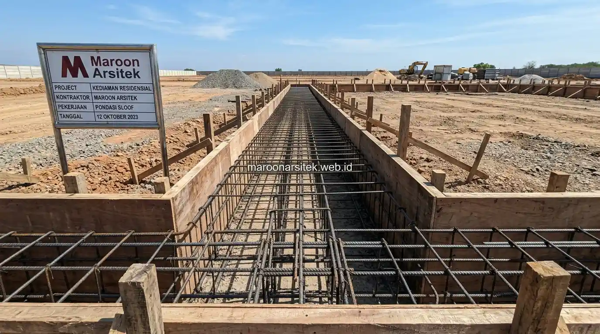

Jasa konstruksi bangunan komersial mempertimbangkan efisiensi antara struktur baja dan beton berdasarkan fungsi bangunan, bentang ruang yang dibutuhkan, dan kecepatan pengerjaan, karena kedua jenis struktur memiliki karakteristik berbeda yang sesuai untuk kebutuhan tertentu. Maroon Arsitek membantu menentukan pilihan struktur yang paling efisien melalui layanan jasa konstruksi bangunan komersial sesuai kebutuhan operasional bisnis klien.
Keputusan antara struktur baja dan beton sering membingungkan pengusaha yang membangun gudang atau cafe, karena masing-masing memiliki keunggulan yang berbeda tergantung konteks penggunaan bangunan. Bagian berikut menguraikan pertimbangan efisiensi kedua jenis struktur untuk membantu pengambilan keputusan yang tepat.
Karakteristik Struktur Baja untuk Bangunan Bentang Lebar
Struktur baja umumnya lebih efisien untuk bangunan dengan kebutuhan bentang lebar tanpa kolom penghalang di tengah ruang, seperti gudang penyimpanan barang, karena kekuatan material baja memungkinkan rentang struktur yang lebih panjang dibanding beton konvensional. Karakteristik ini menjadikan baja pilihan populer untuk bangunan komersial dengan kebutuhan ruang terbuka luas.
Waktu pengerjaan struktur baja umumnya lebih singkat dibanding struktur beton, karena komponen baja dapat difabrikasi terlebih dahulu di luar lokasi proyek dan hanya memerlukan proses perakitan di lapangan, mengurangi waktu tunggu yang biasanya diperlukan pada proses pengecoran beton.
Struktur baja juga memberikan fleksibilitas lebih besar untuk modifikasi di masa mendatang, seperti penambahan mezanin atau perluasan bangunan, karena sistem sambungan baja memungkinkan penyesuaian struktur tanpa memerlukan pembongkaran besar seperti pada struktur beton.
Kecepatan Fabrikasi sebagai Keunggulan Struktur Baja
Kebutuhan penyelesaian proyek yang cepat dijawab melalui keunggulan struktur baja yang dapat difabrikasi lebih dahulu sebelum proses perakitan di lokasi, mengurangi waktu konstruksi dibanding metode konvensional yang bergantung pada proses pengecoran di tempat.
Kecepatan ini menjadi pertimbangan penting bagi pengusaha yang memiliki target operasional mendesak, seperti kebutuhan gudang yang harus segera beroperasi untuk mendukung kelancaran rantai pasok bisnis.
Karakteristik Struktur Beton untuk Ketahanan Jangka Panjang
Struktur beton umumnya menawarkan ketahanan yang baik terhadap kelembapan dan kebakaran, menjadikannya pilihan yang sesuai untuk bangunan dengan kebutuhan ketahanan struktural tinggi seperti cafe atau restoran yang beroperasi dengan aktivitas memasak intensif. Karakteristik ini menjadi pertimbangan penting untuk bangunan dengan risiko operasional tertentu.
Struktur beton memerlukan waktu pengerjaan yang lebih panjang dibanding baja, terutama pada tahap pengecoran dan curing, namun menghasilkan struktur yang cenderung lebih masif dan tahan terhadap berbagai kondisi lingkungan dalam jangka panjang bersama tim pelaksana kontraktor bangunan komersial kami.
Perawatan struktur beton umumnya lebih minim dibanding struktur baja yang memerlukan perlindungan tambahan terhadap risiko korosi, terutama untuk bangunan yang berada di lingkungan dengan tingkat kelembapan tinggi sepanjang tahun.

Ketahanan terhadap Kelembapan dan Risiko Kebakaran
Kebutuhan ketahanan struktural untuk bangunan dengan risiko kebakaran, seperti dapur cafe atau restoran, dijawab melalui karakteristik beton yang secara alami lebih tahan terhadap panas dibanding baja tanpa perlindungan tambahan.
Pertimbangan ini penting terutama untuk bangunan komersial dengan aktivitas memasak intensif, di mana ketahanan struktural terhadap risiko kebakaran menjadi prioritas keamanan yang perlu dipertimbangkan sejak tahap pemilihan jenis struktur bangunan.
Kombinasi Struktur Baja dan Beton sesuai Kebutuhan Fungsi
Kombinasi struktur baja dan beton dapat diterapkan pada satu bangunan, memanfaatkan keunggulan masing-masing material sesuai fungsi area tertentu, seperti pondasi beton yang dikombinasikan dengan rangka atap baja untuk efisiensi bentang ruang. Pendekatan kombinasi ini sering digunakan untuk mengoptimalkan biaya dan performa struktural secara bersamaan.
Pemilihan kombinasi disesuaikan dengan analisis kebutuhan fungsional bangunan, mempertimbangkan area mana yang memerlukan ketahanan ekstra dan area mana yang lebih membutuhkan efisiensi bentang ruang tanpa kolom penghalang.
Pendekatan ini memungkinkan pengusaha mendapatkan keseimbangan antara biaya konstruksi, kecepatan pengerjaan, dan ketahanan struktural sesuai kebutuhan spesifik operasional bisnis yang akan berjalan di dalam bangunan tersebut.
Analisis Kebutuhan Fungsional Sebelum Menentukan Kombinasi
Kebutuhan keputusan struktur yang tepat dijawab melalui analisis fungsional yang mempertimbangkan aktivitas operasional bisnis pada setiap area bangunan, sebelum menentukan kombinasi struktur baja dan beton yang paling sesuai untuk proyek tersebut.
Analisis ini membantu memastikan setiap area bangunan menggunakan jenis struktur yang paling efisien sesuai fungsinya, tanpa mengorbankan ketahanan maupun efisiensi biaya secara keseluruhan proyek.